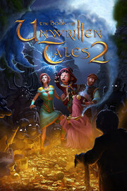

The Book of Unwritten Tales 2
Details
|  | |
| Playtime | 21h 47m 0s |
| Last Activity | 03.12.2021 16:41:12 |
| Added | 15.12.2023 17:11:24 |
| Modified | 12.02.2024 21:49:38 |
| Completion Status | Completed |
| Library | Steam |
| Source | Steam |
| Platform | PC (Windows) |
| Release Date | 18.02.2015 |
| Community Score | 87 |
| Critic Score | 75 |
| User Score | |
| Genre | Adventure Point-and-click Puzzle |
| Developer | King Art |
| Publisher | Nordic Games Group Nordic Games Publishing The Adventure Company THQ Nordic |
| Feature | Single Player |
| Links | Official Steam GOG iPhone iPad Twitch |
| Tag | |
Description
Every world needs its heroes. However unlikely they may seem. Join Wilbur, Ivo, Nate and Critter in another classic point-and-click adventure in the wicked world of Aventásia. Help them fulfill their destiny. A destiny as yet unwritten.
A few years have passed since our heroes heroically defeated the arch-witch Mortroga. And their lives, like the lives of most people in Aventásia, are still in turmoil. The War of the Two Towers is over, but the wounds it left upon the land are still bleeding.
The gnome Wilbur Weathervane is struggling with his new job as a teacher at the reopened School for Wizardry and Witchcraft. His magic wand is having a mind of its own and an assassination plot against the arch-mage overshadows the first democratic elections in Seastone.
Faced with political intrigues that threaten the delicate balance of peace, Wilbur is in dire need of his old friends. But the elf princess Ivo and the adventurer Nate have, after a brief romantic interlude, gone their separate ways.
Ivo has returned to her gilded cage in the elf kingdom, overprotected by her controlling mother.
Nate along with his trusty companion Critter has been taken prisoner on the flying island of his arch-enemy the Red Pirate.
But fate does not rest. A darkness has fallen upon the land, or rather, a pinkness. A magic force is turning mighty beasts into fluffy plush puppies and towering castles into oversized dollhouses. Can Aventásia be saved?
Thanks to the support of our fans on Kickstarter, The Book of Unwritten Tales 2 features:
The Tale
A few years have passed since our heroes heroically defeated the arch-witch Mortroga. And their lives, like the lives of most people in Aventásia, are still in turmoil. The War of the Two Towers is over, but the wounds it left upon the land are still bleeding.
The gnome Wilbur Weathervane is struggling with his new job as a teacher at the reopened School for Wizardry and Witchcraft. His magic wand is having a mind of its own and an assassination plot against the arch-mage overshadows the first democratic elections in Seastone.
Faced with political intrigues that threaten the delicate balance of peace, Wilbur is in dire need of his old friends. But the elf princess Ivo and the adventurer Nate have, after a brief romantic interlude, gone their separate ways.
Ivo has returned to her gilded cage in the elf kingdom, overprotected by her controlling mother.
Nate along with his trusty companion Critter has been taken prisoner on the flying island of his arch-enemy the Red Pirate.
But fate does not rest. A darkness has fallen upon the land, or rather, a pinkness. A magic force is turning mighty beasts into fluffy plush puppies and towering castles into oversized dollhouses. Can Aventásia be saved?
Key Features
- A new adventure from KING Art, the creators of The Book of Unwritten Tales, The Critter Chronicles and The Raven – Legacy of a Master Thief
- A fantasy story with over 20 hours of pointing and clicking
- The trademark BoUT-humor, lovingly spoofing LotR, Game of Thrones, Harry Potter, Discworld, The Hobbit, WoW and more
- Hundreds of weird, yet oddly logical puzzles
- The well-proven "Multi-Character-Gameplay"
- The established four playable characters Wilbur, Nate, Ivo and Critter
- An ensemble of quirky characters, both well-established and brand-new
- Projection Mapping technology unites the merits of 2D and 3D styles and technique
- An epic soundtrack with all the classics and many new compositions
Kickstarter-powered Extra Features
Thanks to the support of our fans on Kickstarter, The Book of Unwritten Tales 2 features:
- Optional Side-Quests: Similar to RPGs the game features optional puzzle chains aside the main puzzles, that you can choose to solve, but don´t have to
- Extra Outfits: For solving side-quests you not only receive achievements, but also unique outfits that the playable characters can equip
- Orchestra recordings: For the first time most of Benny Oschmann´s much-loved score for the game was recorded with a live orchestra